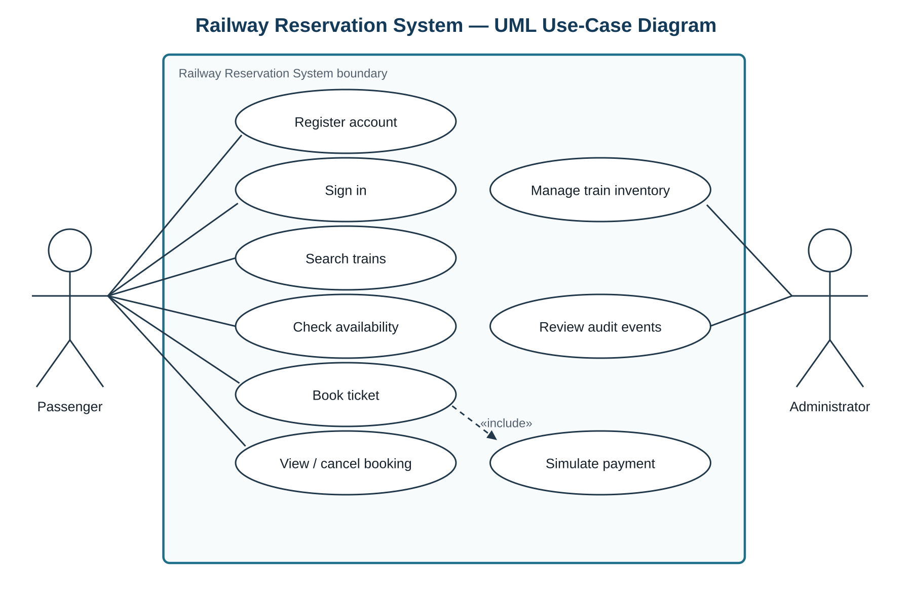

1. Introduction
1.1 Purpose
This specification defines the observable behavior, interfaces, constraints, quality attributes and security requirements of the Railway Reservation System prototype. It is the requirements baseline for architecture, design and testing.
1.2 Scope
Passengers register, sign in, search trains, inspect seat availability, create a reservation after simulated payment, view their bookings and cancel an eligible booking. Administrators maintain train trips and seat capacity and review audit events. The prototype excludes live railway-network integration, real money movement, dynamic pricing and wait-list allocation.
1.3 Intended Audience and Conventions
This document is intended for the project team, instructors, reviewers and testers. Requirement identifiers use FR for functional requirements, NFR for non-functional requirements and SEC for security requirements. Times are measured at the service boundary under the Test Plan’s stated conditions.
1.4 Definitions and References
| Term | Definition |
|---|---|
| PNR | A unique booking reference. |
| Seat hold | A temporary exclusive claim on one seat during a booking transaction. |
| Confirmed booking | A booking with one allocated seat and successful simulated payment. |
| Administrator | An authenticated user authorized to manage schedules, inventory and audit review. |
| Idempotency key | A caller-supplied unique key that makes a retried booking request return the original result rather than create another booking. |
References: SE Mini Project Deliverables Part-1; ISO/IEC/IEEE 29148:2018 requirements-engineering guidance.
2. Overall Description
2.1 Product Perspective
RRS is a browser-based client backed by a REST API and relational database. The browser never accesses the database directly. A deterministic payment simulator provides success, failure and refund responses for testing.
2.2 Product Functions
- Account registration, authentication, sign-out and lockout.
- Train search, ordered results and current seat availability.
- Idempotent booking, simulated payment and unique PNR generation.
- Passenger-owned booking history and eligible cancellation.
- Administrator trip/inventory management and audit review.
2.3 User Classes
| User class | Permitted responsibilities |
|---|---|
| Passenger | Manage own account session; search; view availability; book; view and cancel own eligible bookings. |
| Administrator | Create, edit and disable trips and capacity; review audit events. Administrator permissions are enforced server-side. |
2.4 Operating Environment
A current desktop or mobile browser connects to the application over HTTPS. The API and database run as separate server processes. Timestamps are stored in UTC and displayed with an explicit timezone label.
2.5 Assumptions and Constraints
- A trip has a train number, origin, destination, departure/arrival time, travel date, fare and finite capacity.
- One seat is booked per transaction. A cancellation is eligible only before departure.
- Test accounts, seeded trip data and configurable payment-simulator responses are available.
- No real payment credentials or real passenger identities are processed.
3. External Interface Requirements
3.1 User Interfaces
Passenger screens support registration, sign-in, search, availability, checkout, booking history and cancellation. Administrator screens support trip management and audit review. Forms identify required fields, expose programmatic labels and show actionable validation messages.
3.2 Software Interfaces
The UI exchanges JSON with the REST API over HTTPS. The payment simulator exposes authorization and refund operations. The database persists users, trips, seats, bookings, payment events and audit events.
3.3 Communication Interfaces
Authenticated traffic uses HTTPS. JSON dates use ISO 8601 with an explicit UTC offset. Sessions are represented by secure tokens whose lifecycle is defined in SEC-03.
4. Specific Requirements
4.1 Functional Requirements
4.2 Non-Functional Requirements
4.3 Security Objectives and Requirements
Security Objectives
- SO-01: Prevent unauthorized access to passenger records and administrator functions.
- SO-02: Protect credentials and booking data in transit and at rest.
- SO-03: Preserve a trustworthy audit history of security-sensitive actions.
Security Requirements
5. UML Use Cases

5.1 UC-01 — Book Ticket
| Primary actor | Passenger |
|---|---|
| Preconditions | The passenger is authenticated; the selected trip is enabled. |
| Main flow | Search trip → check availability → submit booking with idempotency key → reserve one seat → simulate payment → create confirmed booking and PNR → record audit event. |
| Alternatives | Sold-out inventory returns conflict. Payment failure releases the hold. A duplicate idempotency key returns the original result. |
| Postcondition | Exactly one confirmed booking exists on success; none exists after payment failure. |
5.2 UC-02 — Cancel Booking
| Primary actor | Passenger |
|---|---|
| Preconditions | The booking belongs to the passenger, is confirmed and its trip has not departed. |
| Main flow | Select booking → validate ownership/status/time → cancel once → release seat once → record refund reference and audit event. |
| Alternatives | Non-owner receives 403/404. Late or repeated cancellation is rejected without an additional seat change. |
| Postcondition | The booking is cancelled and the inventory change is idempotent. |
6. Acceptance Basis
The SRS baseline is acceptable for Part 1 when every FR, NFR and SEC identifier maps to at least one planned test, the required UML diagrams are present across the submission, and the booking/cancellation invariants are explicitly verified. The Test Plan’s requirement traceability matrix is the authoritative coverage record.